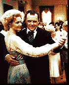

Contents | Features | Reviews | News | Archives | Store |
 |
|
| Movie Credits | Buy It! |
Nixon
Review by Carrie Gorringe
|  | Directed by Oliver Stone. Starring Anthony Hopkins, |
One might say that Nixon is a film by the paranoid, about the paranoid, for the paranoid. Of course, one can say that about most of Oliver Stone’s work, but Nixon is in a different category than JFK. If JFK was the Great White Hope, for many of Stone’s generation, Nixon was their Antichrist. By and large, it is rather difficult to disagree with that assessment -- the first American president to face the prospect of impeachment since Andrew Johnson in 1867, Nixon projected an extremely unpleasant demeanor that seemed to go straight to the bone from the very beginning of his political career. He first gained political prestige by leaping on the anti-Communist bandwagon with all due haste after World War II; his vicious smears of political opponents Jerry Voorhis and Helen Gahagan Douglas were and are legend (during the 1950 congressional election, he publicly referred to Douglas as being "pink right down to her underwear," but, although defeated, her revenge was to stick him with the apt epithet, "Tricky Dick"). Legendary also was his career-saving "Checkers" speech of 1952, a bit of circumlocution around the issue of a political slush fund which was so obviously lachrymose and specious that no one should have bought it. History might have been different had Nixon not adopted a nicer set of party manners at the eleventh hour.
Only with Nixon’s election to the presidency in 1968 did the paranoia come back into full view. Enraged by the publication of the "Pentagon Papers" in 1971, documents which showed that the Nixon administration was determined to say one thing about the war and do something completely different, Nixon began to let the unpleasant side of his personality shine through yet again. He ordered Ellsberg’s file be taken from the office of his psychiatrist and, more seriously, he authorized the break-in at Democratic Party headquarters which would become the Watergate scandal. As if this weren’t enough, Nixon had the purblind stupidity to commit all of his meetings with key advisors and staff to audio tape. More than Watergate, these tapes proved to be Nixon’s undoing. One is loath to say that these tapes revealed the "true" nature of Nixon the man, but their content certainly revealed the depths of his ruthlessness and paranoia; among other things, there was Nixon’s desire to have the power to put any American citizen under the surveillance of the F.B.I. without having to obtain permission for each case. Nixon might not have subverted the American Constitution, as is often claimed, but it was not for lack of trying. By the end of his reign (and there is no other way to describe this "imperious" presidency), Nixon probably could have been indicted on several counts had he not finally seen the light and resigned, among them (as itemized by the House Judiciary Committee) burglary, forgery, illegal wiretapping, obstruction of justice, destruction of evidence, tampering with witnesses, misprision of felony, bribery and conspiracy to involve government agencies in illegal actions. His son-in-law, David Eisenhower, stated in 1974 that, fifteen years hence, "the offense is going to look pretty small." Hardly. Despite Nixon’s never-ending attempts to form a post-presidential role as a statesman from his self-inflicted wounds, he was an outcast to his own party and to much of American society until his death in 1994. Not even the specter of Nixon’s funeral, where hypocritical encomiums were offered up on his behalf, or the good things that Nixon accomplished (the opening of diplomatic relations with China -- now perhaps a questionable decision -- welfare reform, and the exposure of Alger Hiss) were sufficient to overcome the stench of his personal and political corruption. Moreover, one part of Nixon’s legacy has lived on after him; contemporary presidential candidates have Nixon’s duplicity while in office to thank in part for the merciless probes into their private lives that they now suffer.
Historians have agonized over the putative accuracy of the events depicted in Nixon. Such public hand-wringing is redundant; all "historical" films play somewhat fast and loose with history, despite their oft-stated dedication to "accuracy" (usually interpreted by Hollywood executives as incontrovertible evidence that they found the right shade of black for Abe Lincoln’s overcoat). At least Stone is honest about the "historical interpretation" in his film. In fact, it seems as if Stone is trying less to convey information than to impart psychological impressions of both Nixon the man and Nixon the president. In this, he succeeds greatly. One comes away from Nixon with a deeper understanding of how a poverty-stricken and violent upbringing at the hands of his father made Nixon so insecure and so willing to win at any cost. But Nixon is by no means a documentary profile of Nixon’s life. There is no strict adherence to chronology; for the first hour, the film’s narrative structure gambols back and forth between various events, like a crazed stag zigzagging through the woods. And Stone needs this disconcerting stance in order to keep this film moving; he may have 192 minutes of film time, but within that time frame, he must convey not only six decades of American history, but also provide a firm psychological portrait of Nixon. Unfortunately, he achieves only half of this rather tall order, but the result is no less captivating.
Nevertheless, all of the seemingly disparate narrative elements in Nixon are linked thematically, in an uneasy combination of mythology and demonology, and, at times, the result is almost a parody of the "Great Man of History" genre. Nixon may have been the most openly monstrous politician in American history, but, as the film suggests, his motivations for so being stemmed from the most of sources; his personal hatreds, not to mention his self-hatred, were so obvious to those around him that even appeals to ideology couldn’t disguise the sources of his policies. And the film is rather emphatic on this theme to the point of being tendentious, especially when an advisor remarks in "sotto voce" disgust, "We got people dying [in Vietnam] because he didn’t make the Varsity football team." Likewise, in the (fictional) scene in which Nixon conducts an angry and guilt-ridden tirade with a portrait of JFK (the gist of which suggests that when Americans look at JFK, they see what they want to be, but when they look at Nixon, they see themselves as they really are). Literary theoretician Roland Barthes once wrote, "Myth hides nothing." However, Nixon provides the necessary caveat to that all-too-true aphorism: one must be willing to acknowledge the existence of the artificial. The film makes it apparent that self-deception on all levels, from the voter to the president, bore responsibility, though in varying degrees, for the occurrence of Watergate. One only has to be reminded of the fact that, nearly two years before his resignation, Nixon was reelected with the highest plurality in American electoral history in order to see the element of truth in this hypothesis. And yet, Nixon is understandably reluctant to extend the blame that far; rather it prefers to believe in Lord Acton’s theory of absolute power corrupting absolutely (the film is prefaced with the quote from Matthew 16:26 about a man gaining the world but losing his soul). But it is obvious from the evidence presented by Stone that Nixon had lost his soul long before he was tempted by the whirring of Sonys and Nagras.
Nevertheless, Stone has stated repeatedly in interviews that his portrait of Nixon the man (as opposed to Nixon the politician), is very sympathetic, and Stone does manage on occasion to inspire, if not sympathy, then at least empathy for this complex man; remarkably, under Stone’s psychological admixture, Nixon comes across as a tragically misunderstood figure at times, as someone who is trying to understand others but whose communications seem to be taking place with a sheet of bulletproof glass between himself and his audience. This is especially apparent in the sequence which takes place during an impromptu early-morning session at the Lincoln Memorial (one which really occurred) in which Nixon tries to reach out to anti-war protesters and to make him see his point of view. Although Nixon doesn’t make much headway before the Secret Service rescues him from his folly, the overall impression of that sequence is one of deep frustration; one tends to sympathize more with Nixon, who is at least making an attempt -- a deeply flawed one, no doubt -- to reach out to these students with whom his only common point of reference is the Vietnam War, whereas their hard-line ideology tends to give them no room to maneuver in terms of making him understand their point of view.
Nixon also conveys a perfect sense of the moral and psychological claustrophobia surrounding Nixon; the scenes between Nixon and his presidential advisors, lit in a soft yellow glow, have a constricted feel, as if everyone in the room is ready to explode with the force of their complicity (or perhaps the audience is supposed to have a jaundiced view of the shenanigans going on in the Nixon White House). Certainly, Nixon chose to surround himself with advisors who possessed less-than-sterling character traits, such as the reptilian duo of Haldeman and Ehrlichman (Woods and Walsh, who provide terrifyingly creepy portrayals), who didn’t seem to be overly concerned with the prospect of using the F.B.I. as a cover so that the C.I.A. could spy on American citizens. Even the great peacemaker, Kissinger (in a masterful performance by Sorvino), is nothing more than a yes-man full of pathetic bluster who uses his own forms of surveillance for self-serving ends. Many of the meetings between Nixon and his aides are shot in 360-degree pans, the movement becomes more ominous as each detail of paranoia, hatred and concealment unfolds. Stone made a wise decision in this case; excessive cutting would have diffused the tension.
But Nixon’s real strength lies in its most obvious device, as it cuts back and forth between the political and the psychological realms; granted, this cause-and-effect structure is primitive, but effective. Stone explores the role of Nixon’s mother, Hannah, a Quaker who displays a piety that is almost perverse in its intensity, so perverse, in fact, that she seems less pious than passive-aggressive (in an immaculate portrayal by Mary Steenburgen). It is Hannah who teaches Nixon how to play the Janus-faced role in society (Stone must have borrowed this interpretation from Fawn Brodie’s psychological biography of Nixon). Instead of tempering the son’s tendencies toward bitterness and resentment, Mama Nixon inadvertently teaches him the value of concealment and he interprets her pious suffering as yet another extension of his father’s resentment over lost opportunities. Nixon becomes the epitome of what Friedrich Nietzsche loathed the most, the "worm-eaten" individual, one who was infested with the disease of "ressentiment" (defined by Nietzsche in On the Genealogy of Morals as the "vengefulness of the impotent," but who hid his hatred under the guise of appearing to be well-meaning. For a pseudo-Populist like Nixon, appealing to the resentments of those who feared Communism in the late 1940s or the influence of young people during the 1960s was an almost certain method of obtaining power (dare one suggest because it was an approach of which he had more than an intimate knowledge?). Unfortunately, resentment was a double-edged sword, one that would eventually decapitate him, for he continued to promote the politics of resentment while secretly beginning to live a lavish lifestyle similar to those he purported to despise. (Indeed, Nixon symbolically represents this split between words and deeds in one particular scene on the presidential yacht, referring to Nixon’s well-documented practice of pouring out wine costing five dollars a bottle for his dinner guests while having his own wine portion poured in secret from a bottle of wine costing twenty-five dollars. The good old "Republican cloth coat" from "Checkers" was still in place, but by 1968 it was being used to disguise a bottle of Chateau Lafitte).
Then there was the influence of his wife, Pat. Because Mrs. Nixon said very little about her life in general, there has been an assumption that her influence and, indeed, her very existence, was relatively minimal; hence, the infamously nasty sobriquet, "Plastic Pat," with which she was christened during her husband’s presidency. Such a picture is not consistent with the story of a woman who had enough inner resources to take herself from the position of a motherless child in a remote mining camp to a degree in education from the University of Southern California and a brief career as a stage actress of some repute; her marriage to Nixon was, in fact, a step backward. To his credit, Stone provides a more detailed portrait of Pat Nixon, one which is characterized by an unwavering support for her husband while not being blind to his faults and Joan Allen makes Mrs. Nixon’s case most persuasively. Her occasional bursts of outrage against her husband stem as much from love as from despair over the damage he is causing to himself. Her strong will was, paradoxically, a weakness, making her too bound by a sense of duty and loyalty to act as a real check on her husband’s ambitions. When she threatens to leave Nixon after his unsuccessful run for governor of California in 1962 unless he puts an end to all political ambitions, Nixon is scared enough to listen to her -- for a time. But often, as Nixon suggests, these outbursts come too infrequently and too late to save his reputation.
Despite Stone’s good intentions, however, Nixon contains some fundamental problems which will probably prevent it from reaching a large audience. It’s true that Stone’s films are deeply personal, but, prior to Nixon, the allusions that Stone placed in his films were always reasonably comprehensible to a mass audience. Now Stone seems to be retreating into an extremely auteurist realm; in order to understand both the narrative structure and the richness of detail that Stone and his collaborators have crammed into every frame and every word, it is no exaggeration to suggest that one should really possess a significant degree of background knowledge before seeing the film (relocating a copy of Woodward and Bernstein’s The Final Days would be most helpful). But it is also apparent that one must understand the allusions precisely as Stone understands them, and advanced abilities in telepathy really shouldn’t be a precondition for film viewing. Another problem rests in Stone’s use of the Forrest Gump Syndrome; after employing computer-generated historical footage through 99 per cent of the film, Stone then drops the pretense of rejiggering footage to turn Hopkins into Nixon and has the real Nixon making a victory gesture before climbing into the helicopter after his resignation in August 1974. Stone has stated that this shift is in homage to Hopkins’ excellent performance in the title role; Hopkins, in effect, has become Nixon, so there is no further need for the substitution. Stone’s assessment of Hopkins’ work is true enough, but, if this is really the case, then why did Stone feel the need to enact the substitution in the first place? The obvious answer is that, despite Stone’s protestations to the contrary and the film’s parodic edge, Nixon required it in order to set a tone of historical verisimilitude. Because of that tacit need, this sudden shift looks not like an homage; rather, it looks like the special-effects budget ran dry -- In other words, it looks sloppy. Despite the film’s obvious merits, there’s a self-indulgent edge to Nixon that is on the verge of going out of control. Although the edge has always been apparent in Stone’s other works, the extent to which it dominates Nixon should be a warning sign to Stone.
In all fairness to Stone, Nixon was going to be a troublesome film in any case; the controversial aspects of Nixon’s life don’t necessarily stem from the public/private splitting of Nixon’s personality, especially since Nixon wasn’t particularly gifted in concealing his darker side. The controversy that both Nixon and Nixon generate has much to do with the rather uncomfortable fact that Nixon’s problems were neither exclusive to himself nor to the nature of American politics. Perhaps the title of Stone’s film should have been Human, All Too Human (all apologies to Nietzsche). At least it would have acted as a form of truth in advertising about the perils of hoisting oneself on one’s own petard. Nixon may not prove to be very popular with a mass audience, but the Nixon family, angered by the putative slandering of Nixon’s reputation in this film, should not take heart in this.
Contents | Features | Reviews | News | Archives | Store
Copyright © 1999 by Nitrate Productions, Inc. All Rights Reserved.